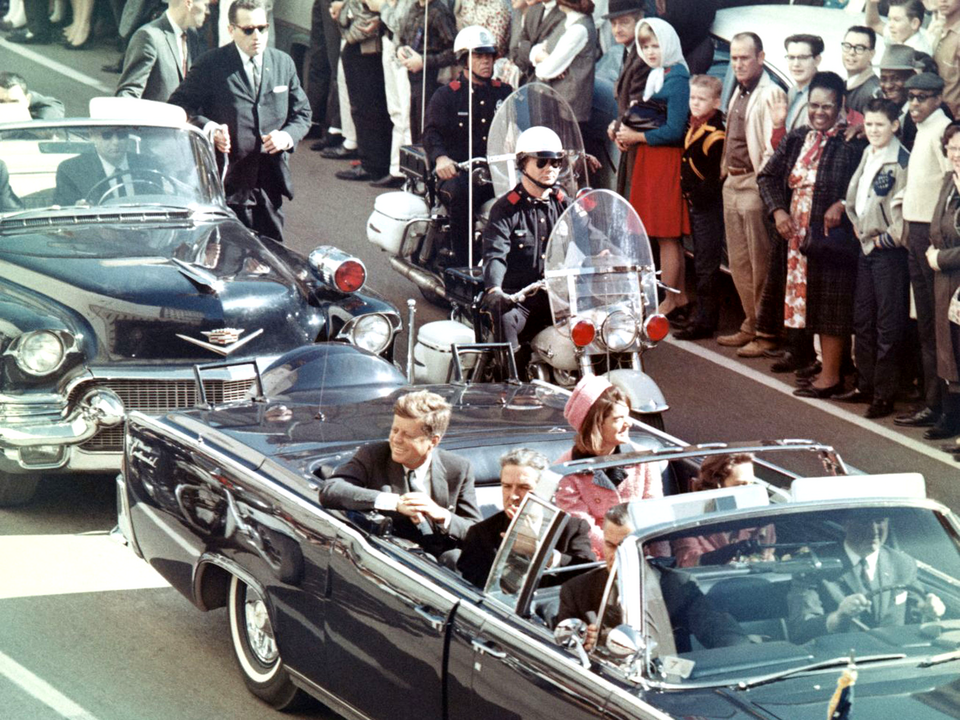

DOSSIER A42-03 // 22 NOVEMBER 1963
The JFK assassination


The claim
Alternative theories allege a second gunman or involvement by intelligence agencies, organized crime, political rivals, or foreign governments. The theories are not one unified account.
What the record supports
The official investigations reached different conclusions in some areas. The Warren Commission concluded Lee Harvey Oswald acted alone; the 1979 House Select Committee concluded a conspiracy was probable, relying significantly on acoustic evidence later disputed by the National Research Council. A large documentary record exists, but not every record resolves every question.
Assessment: The historical record contains genuine uncertainties and contested investigative findings. Those facts warrant archival research; they do not by themselves identify a second shooter or prove a named organization directed the assassination.
Useful checks
- Trace each assertion to the underlying document, recording, physical evidence, or testimony and note when it was created.
- Distinguish a demonstrated inconsistency from an inference about motive or coordination.
- Read later re-evaluations of the acoustic evidence alongside the original committee finding.
- U.S. National Archives — JFK Assassination Records CollectionPrimary records, release information, and collection guide.
- Warren Commission — ReportOfficial 1964 investigation and appendices.
- National Research Council — Report of the Committee on Ballistic AcousticsLater review of the acoustic evidence used in the HSCA conclusion.
Why the record remains contested
The Warren Commission and the later House Select Committee on Assassinations reached different conclusions about conspiracy, but the difference should be described precisely rather than compressed into “the government admitted a plot.” The HSCA's probable-conspiracy conclusion relied substantially on acoustic evidence; a National Research Council review later questioned whether the recording had captured assassination-time shots. That dispute affects one evidentiary strand and does not, by itself, settle every historical question.
Newly released files can clarify contacts, institutional decisions, and investigative quality without automatically proving operational responsibility. Stronger claims should identify the document or physical evidence, establish its provenance, and distinguish evidence of contact or motive from evidence of coordination. The surviving archive supports continuing historical scrutiny; unresolved details are not a substitute for a demonstrated second gunman or sponsor.